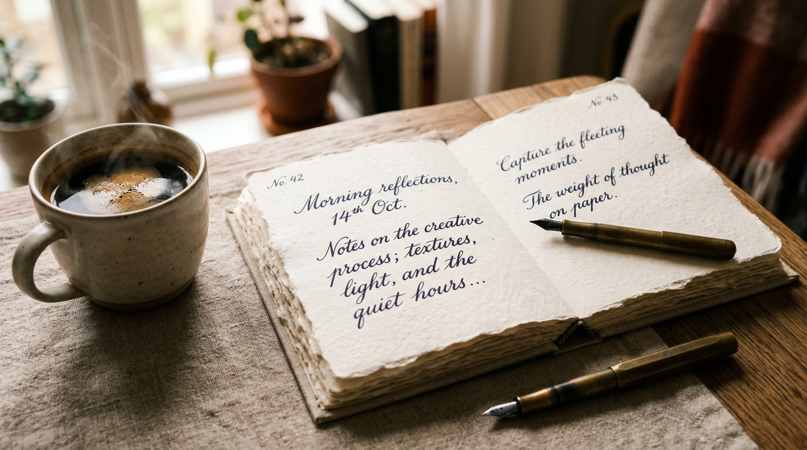
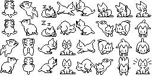

Transform messy journals, late-night notes, and fleeting thoughts into a living celestial constellation. Where ideas breathe, connect, and remember.
Test the cognitive engine right here. Choose a reflection below or type your raw notes to see how The Mirror crystallizes them into connected knowledge.

Thoughts should not be trapped in cold data tables. The Mirror pairs high-velocity AI concept clustering with the tactile warmth of cotton paper, fountain pen reflections, and personal memories.
Every deep reflection happens somewhere in the real world. Click any memory below to inspect the photography and its anchored thought node.
The Mirror is built with specialized intelligence workflows designed for reflective depth.
Record stream-of-consciousness audio memos while on walks or in transit. The Mirror analyzes acoustic cadence, emotional inflection, and semantic themes to anchor glowing nodes.
Drag the scrubber below to witness your ideas grow from 2024 to 2026.
Hover over the nodes above to inspect how non-obvious thematic links are surfaced across months of journal entries.
